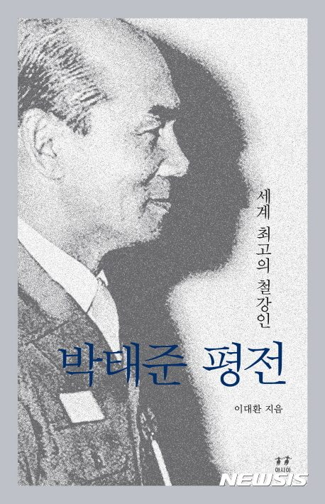

등록일 2016-12-16
"회사 종자돈 조상들의 피의 대가"…'박태준 평전' 5주기 완결판
박정규 기자 |
pjk76@newsis.com
【서울=뉴시스】박정규 기자 = 한국 산업화의 초석이 된 철강신화를 이끌어낸 거목 박태준의 타계 5주기를 맞아 그의 평전이 완성됐다.
2004년에 출간된 '세계 최고의 철강인 박태준' 이후 12년 만에 다시 출간된 책이다. 세상에 알려지지 않았던 '박태준의 마지막 계절'을 비롯해 2004년 여름부터 그가 타계하기까지 기존 평전을 보완해 완결판을 펴냈다.
포스코를 초일류 대기업으로 만들고 회장으로 지냈으면서도 주식을 한 주도 받지 않았다는 일화 등 이미 알려진 박태준 외에 그가 세상을 떠나기 전 남긴 흔적들을 담아냈다.
희대의 부패 스캔들로 어지러운 지금의 한국 사회에 그가 보여준 기업가 정신과 통합의 리더십이 다시 박태준을 돌이켜봐야 하는 이유라고 저자는 역설한다.
"가장 먼저 기억할 것은, 회사의 종자돈이 조상들의 피의 대가였다는 사실입니다. 대일청구권자금, 그 식민지 배상금의 일부로써 포철 1기 건설을 시작할 수 있었습니다. 그래서 우리가 외친 제철보국과 우향우는 한층 더 우리의 가슴을 적시고 영혼을 울렸을 것입니다. 바로 여기서 포스코에 요구되는 고도의 윤리의식이 나옵니다…."('박태준의 생애 마지막 연설(2011년 9월 19일)' 중)
"11월 12일 새벽 1시 30분. 집에 돌아와 깜빡 눈을 붙이고 있던 신형구 비서가 휴대폰을 받고 부리나케 옷을 갈아입었다. 회장님께서 찾으신다는 중환자실 간호사의 연락이었다. 차를 몰아 달리는 30분 동안 젊은 비서의 가슴은 내내 쿵쾅거리고 있었다. 혹시 긴급 상황이 벌어진 것은 아닐까?…. 긴 마취와 10시간에 육박한 수술이 시간의 혼돈을 초래했을 거라고 비서가 짐작하는 사이, 환자가 불쑥 강하게 물었다. '유럽은 어떻게 되었나?'"('박태준의 마지막 계절' 중) 이대환 지음, 1032쪽, 아시아, 3만2000원.
pjk76@newsis.com
[출처]
http://www.newsis.com/ar_detail/view.html/?ar_id=NISX20161216_0014586292&cID=10704&pID=10700


이 글은 구 홈페이지에서 옮겨온 것입니다. 원문 보기